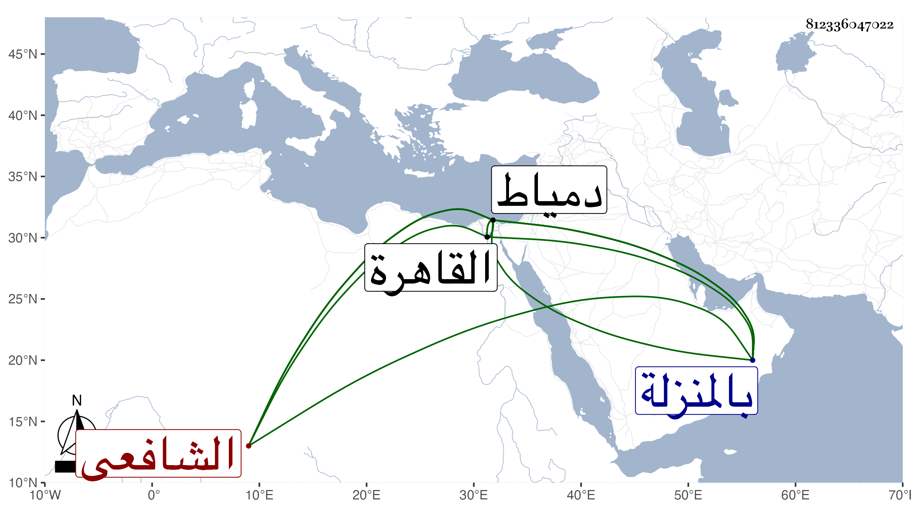

0902Sakhawi.DawLamic.ITO20230111-ara1.EIS1600.812336047022
Biography ID: 812336047022
996
سليمان بن داود بن محمد بن داود علم الدين المنزلى ثم الدمياطى الشافعى . نزيل المسلمية بدمياط ووالد البدر محمد الآتى ويعرف بالفقيه علم الدين وبابن الفران حرفة أبيه . ولد سنة تسع وثمانمائة بالمنزلة ونشأ بها فحفظ القرآن وجوده عند الفقاعي وناصر الدين بن سويدان ولازمه في الفقه والعربية وغيرهما وقرأ الحديث على صاحبنا الزين عبد الرحمن بن الفقيه موسى وكان إذا روى عنه يستره فيقول أنا أبو محمد أنا ابن حجر ، ثم لقي شيخنا بعد ذلك بقطنا وهو متوجه لآمد فأجاز له ، وكذا قرأ على الفرياني المغربي وحفظ فيما بلغني المنهاج والملحة وكان يتسلط بذكائه على الخوض في فنون بحيث شارك في الفقه والعربية والفرائض والحساب والعروض وغيرها وأوتي مع الذكاء سرعة الحفظ فكان يحفظ من التاريخ شيئا كثيرا وقرأ البخاري للعامة في الأشهر الثلاثة بالمدرسة المسلمية فكانت تعرض عليه في الختم الجوائز فلا يقبلها فاشتهر بذلك وهابه أرباب المناصب ولا زال يترقى في دمياط حتى صار له الصيت العظيم والشهرة الزائدة بحيث كانت شفاعاته لا ترد خصوصا عند الجمالي ناطر الخاص فمن دونه والجمالي هو المنوه بذكره عند الظاهر جقمق حتى استدعى به إلى القاهرة وتعزر في المجيء ثم في الاجتماع معه ولما اجتمعا أنعم عليه بدنيا فامتنع من قبولها ولم يسمح بقبولها مرتبا بالجوالي فقيل له فيكون باسم ولدك فأظهر التمنع ثم أذعن ، وكذا ولي تدريس الناصرية بدمياط ونظرها وأقرأ فيها الكتب الثلاثة ولم يكن مع هذه الشهرة والوجاهة يعارض أحدا من المباشرين ونحوهم إلا فيما لا ضرر عليهم فيه ونقم عليه الخيرون ذلك ، وكذا نقم عليه عدم تقريبه لوالده وتحاشيه عن إظهاره إذا قصده للزيارة والناس مختلفون في شأنه والأكثرون على ما أثبته وقد هجاه البقاعي وتبعه في ذلك غيره بما لا خير في إثباته ، ولقيته بدمياط وما سمح بإخباري بمولده بل وشرعت في الكلام معه في بعض المسائل فما خاض فيها وبادر لاحضار الأكل فقرأنا الفاتحة وانصرفنا . مات في ذي الحجة سنة إحدى وسبعين بدمياط ودفن بضريح الشيخ عثمان الشرباصي في سوق الحصريين ، وقد جاز الستين رحمه الله وإيانا .
